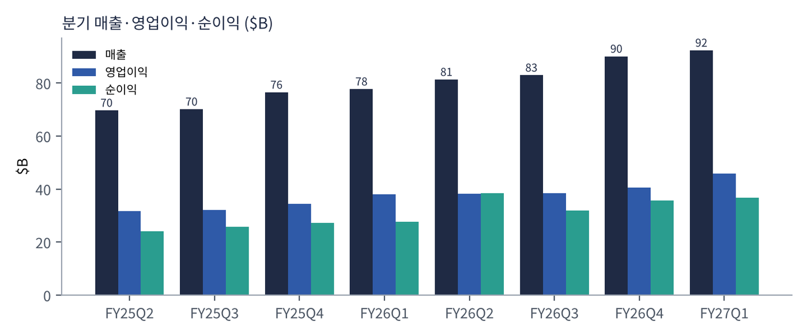
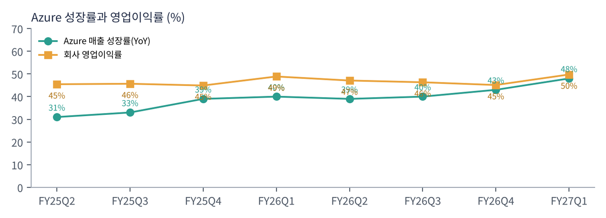
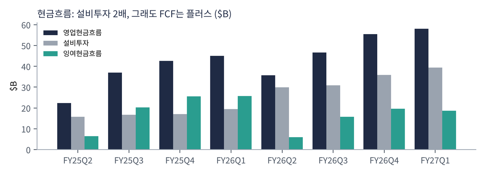
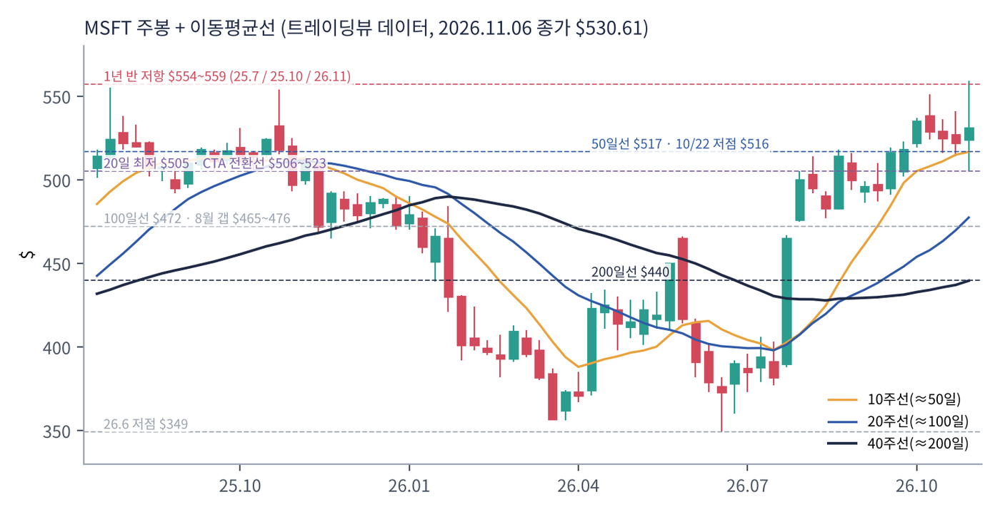
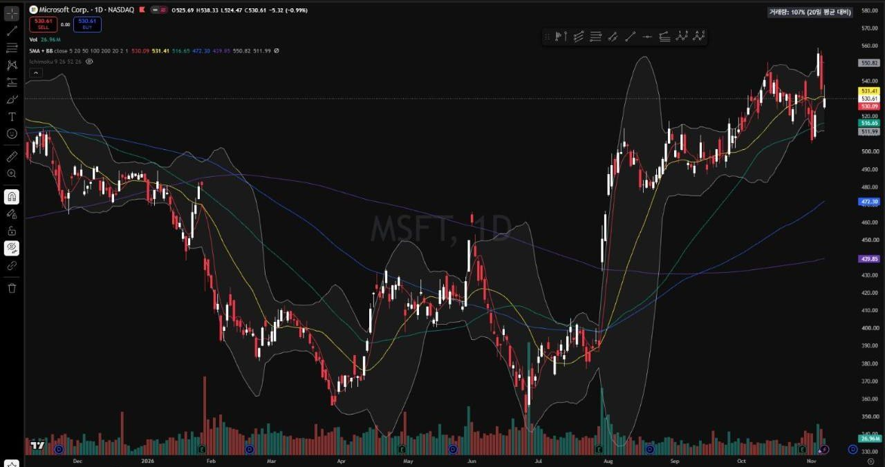
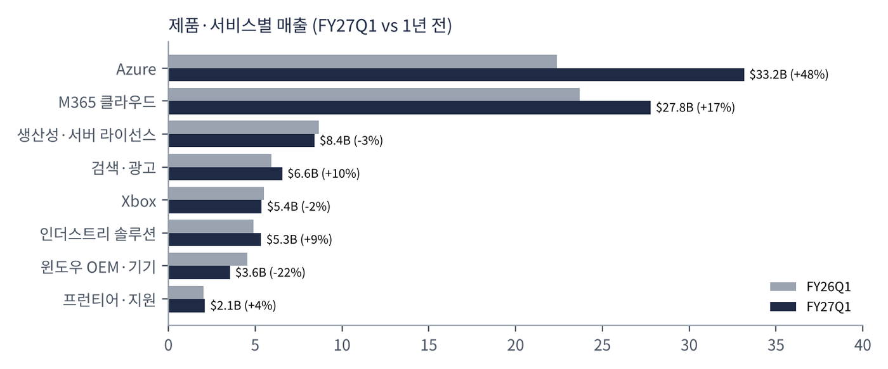

마이크로소프트는 윈도우·오피스로 PC 시대를 지배한 소프트웨어 회사에서, 클라우드(Azure)와 구독형 업무 소프트웨어(마이크로소프트 365), 그리고 AI(코파일럿·파운드리)를 파는 회사로 바뀌었다. 기업 고객 기반이 압도적으로 넓다는 것이 가장 큰 자산이다.
| 항목 | 내용 |
|---|---|
| 종목 | Microsoft Corporation (MSFT) · 패키지 소프트웨어 · 1975년 설립 · 본사 워싱턴주 레드먼드 |
| 경영진 | 사티아 나델라 회장 겸 CEO / 에이미 후드 CFO |
| 시가총액 | $3.94T (11/6 종가 기준) · 희석 주식 수 약 74.5억 주 |
| 최근 분기(FY27Q1) | 매출 $92.3B(+19%), 영업이익 $45.9B, 순이익 $36.6B, EPS $4.92(+32%) |
| 밸류에이션 | TTM PER 26.5배 |
| 주주환원 | 분기 $10.2B (배당 $6.8B + 자사주 매입 $4.4B) |
| 분기 (종료월) | 매출 | YoY | 영업이익 | 이익률 | 순이익 | EPS | MS 클라우드 | Azure 성장 |
|---|---|---|---|---|---|---|---|---|
| FY25Q2 (24.12) | $69.6B | +12% | $31.7B | 45.5% | $24.1B | $3.23 | $40.9B | +31% |
| FY25Q3 (25.3) | $70.1B | +13% | $32.0B | 45.7% | $25.8B | $3.46 | $42.4B | +33% |
| FY25Q4 (25.6) | $76.4B | +18% | $34.3B | 44.9% | $27.2B | $3.65 | $46.7B | +39% |
| FY26Q1 (25.9) | $77.7B | +18% | $38.0B | 48.9% | $27.7B | $3.72 | $49.1B | +40% |
| FY26Q2 (25.12) | $81.3B | +17% | $38.3B | 47.1% | $38.5B | $5.16 | $51.5B | +39% |
| FY26Q3 (26.3) | $82.9B | +18% | $38.4B | 46.3% | $31.8B | $4.27 | $54.5B | +40% |
| FY26Q4 (26.6) | $90.0B | +18% | $40.6B | 45.1% | $35.8B | $4.81 | $59.3B | +43% |
| FY27Q1 (26.9) | $92.3B | +19% | $45.9B | 49.8% | $36.6B | $4.92 | $63.9B | +48% |
연간: FY26 매출 $331.8B, 영업이익 $155.2B, 순이익 $133.7B. 순이익에는 오픈AI 지분 관련 손익이 섞인다(FY26Q1 -$3.1B, FY27Q1 +$0.2B 등).


8분기 동안 매출은 $69.6B → $92.3B(+33%), 영업이익은 $31.7B → $45.9B(+45%)가 됐다. 이익이 매출보다 빨리 늘었다는 것이 핵심이다. 수천억 달러짜리 데이터센터 투자로 감가상각이 늘었는데도 영업이익률은 45%대에서 50% 가까이 올라갔다. 다만 마이크로소프트 클라우드 매출총이익률은 다음 분기 약 65%로 전년보다 낮아질 전망이다. 마진이 낮은 Azure 비중이 커지기 때문이다.
| 분기 | 무슨 일이 있었나 |
|---|---|
| FY25Q2 | 매출 +12%, Azure +31%. 연말 법인세 납부 영향으로 영업현금흐름이 $22.3B로 낮아 FCF $6.5B. |
| FY25Q3 | Azure +33%로 가속 시작. 클라우드 매출 $42.4B. |
| FY25Q4 | 매출 +18%로 한 단계 점프, Azure +39%. FY25를 성장 가속으로 마감. |
| FY26Q1 | 영업이익률 48.9%. RPO $392B(+51%). 오픈AI 관련 손실 $3.1B가 순이익을 깎음. |
| FY26Q2 | RPO가 $625B(+110%)로 급증 — 대형 Azure 장기 계약 반영. 설비투자 현금이 $29.9B로 한 분기 만에 50% 증가. 오픈AI 관련 이익으로 순이익 $38.5B. |
| FY26Q3 | 매출 +18%, Azure +40%, RPO $627B(+99%). 영업현금흐름 $46.7B. |
| FY26Q4 | 매출 $90.0B, Azure +43%. 구조조정 비용·Xbox 손상차손 반영. FY26 매출 $331.8B. |
| FY27Q1 | 사업부 재편 후 첫 분기. Azure +48%($33.2B), 클라우드 +30%로 가속, 영업이익률 49.8%. 윈도우 OEM·기기 -22%. |

| 현금흐름 ($B) | FY25Q2 | FY25Q3 | FY25Q4 | FY26Q1 | FY26Q2 | FY26Q3 | FY26Q4 | FY27Q1 |
|---|---|---|---|---|---|---|---|---|
| 영업현금흐름 | 22.3 | 37.0 | 42.6 | 45.1 | 35.8 | 46.7 | 55.4 | 58.0 |
| 설비투자(현금) | 15.8 | 16.7 | 17.1 | 19.4 | 29.9 | 30.9 | 35.8 | 39.4 |
| 잉여현금흐름 | 6.5 | 20.3 | 25.6 | 25.7 | 5.9 | 15.8 | 19.6 | 18.6 |
회사가 발표하는 설비투자에는 금융리스가 포함된다. FY27Q1 기준 금융리스 포함 설비투자는 $45.2B(그중 리스 $7.4B)이고, 약 3/4이 CPU·GPU 같은 단기 자산이다. 회사는 메모리·스토리지 가격 상승이 설비투자를 키우고 있다고 밝혔다. 앞서 분석한 마이크론의 가격 상승이 고객의 비용으로 나타난 것이다.
| 항목 | 회사 가이던스 |
|---|---|
| 전체 매출 | $96.0~97.1B (+18~19%) |
| 에이전트·인프라 / 기기·소비자 | $80.1~80.7B (+24~25%) / $15.9~16.4B |
| Azure | +49~50% (고정환율). 수요가 공급을 계속 초과 |
| 설비투자 | Q2 $50B 이상, 2026년(달력) 약 $170B. 하반기에 더 가속 |
| 영업이익률 | 전년 대비 소폭 하락 (희망퇴직 프로그램 비용 포함) |
트레이딩뷰 MSFT 일봉 519개(2024.10 ~ 2026.11.6)와 주봉으로 계산했다. 결론부터 말하면 세 종목(알파벳·아마존 포함) 중 추세가 가장 건강하다. 문제는 $554~559라는 오래된 천장이다.


위: 주봉 재구성 차트. 아래: 트레이딩뷰 일봉 캡처(작도 없이 이동평균선·볼린저밴드만 표시).
| 이동평균 | 값 | 종가 대비 | 해석 |
|---|---|---|---|
| 5일선 | $530.1 | +0.1% | 11/4 급등 후 되돌림 중 |
| 20일선 | $531.4 | -0.1% | 주가가 20일선 위에 걸쳐 있음 — 단기 방향 결정 구간 |
| 50일선 | $516.6 | +2.7% | 1차 지지. 8월 이후 한 번도 종가로 깨지지 않음 |
| 100일선 | $472.3 | +12.3% | 8월 갭 구간($465~476)과 겹침 |
| 200일선 | $439.8 | +20.6% | 6월 저점($349) 이후 다시 상승 전환 |
배열은 주가 ≈ 20일 > 50일 > 100일 > 200일의 완전 정배열이다. 2026년 1~6월 하락($490 → $349) 이후 7월 말 실적 발표 갭 상승($382 → $465)으로 추세가 뒤집혔고, 지금은 그 상승 추세의 연장선에 있다.
| 규칙 | 기준 | 현재 값 | 신호 |
|---|---|---|---|
| 장기 추세 필터 | 종가 vs 200일선 | $530.6 > $439.8 | 매수 |
| 중장기 교차 | 50일선 vs 200일선 | $516.6 > $439.8 | 매수 |
| 단기 교차 | 20일선 vs 50일선 | $531.4 > $516.6 | 매수 |
| 돈키언 채널 | 55일 최고가 경신 | 11/4 $559.1 신고가 | 매수 |
| 1개월 모멘텀 | 21거래일 수익률 | +1.5% | 매수(약) |
| 3개월 모멘텀 | 63거래일 수익률 | +4.9% | 매수 |
| 6개월 모멘텀 | 126거래일 수익률 | +27.8% | 매수 |
| 12개월 모멘텀 | 252거래일 수익률 | +4.6% | 매수 |
| 종합 (8개 평균) | +1.00 | 풀 롱 | |
해석: 추세추종 모델 입장에서는 가장 매수하기 좋은 상태다. 다만 1개월(+1.5%)·3개월(+4.9%)·12개월(+4.6%) 모멘텀의 기준 가격이 모두 $506~523에 몰려 있다. 주가가 이 구간 아래로 내려가면 세 신호가 한꺼번에 매도로 바뀐다. 상승 추세지만 '여유'가 크지 않다는 뜻이다. 60일 변동성은 연 26.9%(ATR $14.5)로 세 종목 중 가장 낮다.
| 가격 | 무엇이 바뀌나 | 의미 |
|---|---|---|
| $560 종가 돌파 | 1년 반 저항 돌파 + 사상 최고가 영역 | 저항이 사라져 추세 가속 가능. 박스 폭($505~559) 만큼 목표 약 $613 |
| $506 ~ 523 | 1·3·12개월 모멘텀 기준 가격 밀집 | 종가 이탈 시 CTA 신호 3개가 동시에 매도 전환 |
| $505 | 20일·11/2 저점 | 단기 추세 이탈 확인선 |
| $465 ~ 476 | 100일선 + 8월 갭 | 중기 추세의 마지막 지지 |
| 구분 | 가격대 | 근거 |
|---|---|---|
| 저항 | $554 ~ 559 | 2025년 7월 고점 $555, 2025년 10월 $554, 2026년 11월 $559 — 세 번 막힌 천장 |
| 지지 1 | $516 ~ 521 | 50일선, 10/22 저점 $516, 11/3 종가 $521 |
| 지지 2 | $505 | 11/2 저점이자 20일 최저가 |
| 지지 3 | $465 ~ 476 | 100일선, 8월 갭 구간 |
기본 판단: 상승 추세 안의 '천장 테스트' 구간이다. 펀더멘털(Azure 가속, FCF 플러스)과 추세가 같은 방향을 가리키므로 하락보다는 돌파 쪽 확률이 높다고 본다. 다만 신고가 직전에서 추격 매수하기보다 50일선 부근 눌림을 기다리거나, $560 종가 돌파를 확인하고 들어가는 두 가지 방식이 손익비가 좋다.
| 가격대 | 시나리오 | 대응 |
|---|---|---|
| $600 이상 | 추세 가속 | 2차 익절, 잔여 추세 추종 |
| $560 종가 돌파 | 천장 돌파 | 돌파 진입, 손절 $530으로 상향 |
| $516 ~ 521 | 정상 눌림 | 눌림 진입 50% |
| $499 이하 종가 | 단기 추세 이탈 | 손절 |
| $465 ~ 476 | 중기 조정 | 관망, 지지 확인 시 재검토 |
FY27부터 마이크로소프트는 제품·서비스별 매출을 8개로 나눠 공개한다. 이 표가 회사가 무엇으로 돈을 버는지를 가장 정확하게 보여준다.

| 매출원 | 돈을 버는 방식 | FY27Q1 | 성장 |
|---|---|---|---|
| Azure | 기업·AI 연구소가 쓰는 서버·GPU·데이터베이스·AI 모델(파운드리) 사용료. 쓴 만큼 내는 종량제가 중심 | $33.2B | +48% |
| M365 클라우드 | 오피스·팀즈·아웃룩·보안(E3·E5·E7)을 직원 1인당 월 구독료로 판매. 코파일럿 유료 좌석이 단가를 올림 | $27.8B | +17% |
| 생산성·서버 라이선스 | 설치형 오피스·윈도우 서버·SQL 서버 라이선스. 클라우드로 옮겨가며 감소 | $8.4B | -3% |
| 검색·광고 | 빙 검색 광고. 트래픽 획득 비용 제외 시 +12% | $6.6B | +10% |
| Xbox | 게임 콘텐츠·게임패스 구독·콘솔 | $5.4B | -2% |
| 인더스트리 솔루션 | 다이내믹스 365(ERP·CRM), 링크드인, 산업별 클라우드 | $5.3B | +9% |
| 윈도우 OEM·기기 | PC 제조사에 파는 윈도우 라이선스, 서피스. 윈도우10 지원 종료 특수의 역기저 | $3.6B | -22% |
| 프런티어·지원 서비스 | 컨설팅·기술 지원 | $2.1B | +4% |
매출의 성격이 바뀌고 있다. 1년 전 Azure($22.4B)는 M365 클라우드($23.7B)보다 작았지만 이제 $5B 이상 크다. 마이크로소프트는 '1인당 구독료를 받는 소프트웨어 회사'에서 '사용량만큼 받는 인프라 회사'로 무게중심이 옮겨가고 있다. 나델라 CEO는 콜에서 사업 모델이 좌석당 구독에서 사용량(소비) 과금까지 넓어지고 있다고 설명했다. IT 부서가 예산을 대는 구독은 모든 직원의 일상 AI를, 현업 부서가 예산을 대는 소비 과금은 에이전트가 하는 고부가 업무를 담당하는 구조다. 코파일럿 사용량 과금 고객은 한 분기 만에 75% 이상 늘었다.
상업용 RPO는 $677B(+73%)로, 이미 계약됐지만 아직 매출로 잡히지 않은 금액이다. 가중평균 기간은 2.3년이고 약 30%(약 $200B)가 12개월 안에 매출이 된다. 12개월 이후분은 +98%로 훨씬 빨리 늘었다. FY26Q2에 RPO가 한 분기 만에 $392B → $625B로 뛴 것은 대형 Azure 장기 계약 때문이며, 이후 분기에도 대형 계약이 이어졌다. 즉 Azure의 높은 성장률은 상당 부분 이미 계약으로 확보된 수요다.
마이크로소프트의 공식 미션은 지구상의 모든 사람과 모든 조직이 더 많은 것을 이루도록 힘을 주는 것이다. FY27Q1 콜에서 나델라 CEO는 이를 AI 시대에 맞게 세 가지 초점으로 풀었다. 사람에게 힘을 주는 AI 설계, 모든 조직이 자기 학습(데이터·모델)의 주권을 갖게 하는 것, 에이전트 안전·보안으로 신뢰를 쌓는 것이다. 실제 행동에서 읽히는 방향은 세 가지다.
정리하면, 마이크로소프트의 궁극적 목적은 "기업이 AI로 일하는 방식 전체의 기본값이 되는 것"이다. 사람은 코파일럿으로, 개발자는 깃허브로, 회사의 데이터와 에이전트는 Azure·파운드리 위에서 돌아가게 만들고, 어떤 모델이 이기든 그 위에서 돈을 번다. 소비자 시장(검색·기기·게임)은 이 목표의 주변부로 밀려나고 있다.
| 주제 | 경영진 코멘트 (요지) | 읽어야 할 포인트 |
|---|---|---|
| 수요 vs 공급 | 고객 수요가 가용 공급을 계속 초과 (후드) | 성장의 상한은 데이터센터 용량 |
| Azure 성장 | 제3자 용량 지연에도 예상보다 강한 +48%. 파운드리와 CPU 수익화 개선이 견인. 다음 분기 +49~50% | 공급 제약 속에서도 가속 |
| 제3자 GPU 지연 | 1분기에 들어올 예정이던 제3자 용량 일부가 지연돼 설비투자가 예상보다 적었음. 일부 GPU 서비스 계약은 하반기로 이연 | 외부 GPU 임대(네오클라우드) 의존도 존재 |
| 효율 개선 | GPU 함대 효율 향상으로 추가 용량을 고객에게 배분, 토큰당 매출도 상승. 놀던 CPU 용량을 찾아 수익화 | 같은 설비로 더 많은 매출 |
| 설비투자 | Q2 $50B 이상, 2026년 약 $170B. 하반기 CPU(메모리·스토리지 가격 상승 포함)·GPU 중심으로 가속 | 메모리 가격 상승이 비용 증가 요인 |
| RPO | $677B(+73%), 12개월 내 인식분 약 30%. 12개월 이후분 +98% | 장기 수요가 더 빠르게 쌓임 |
| 코파일럿 수요 | 자동화 작업 7월 이후 거의 2배, 일일 사용자 +50% QoQ, 5만 좌석 이상 고객 8배, E7 수백만 유료 좌석 | '파일럿'을 넘어 대규모 배포 단계 |
| M365 약점 | E3·단품 판매 실행이 약했음. 좌석당 판매와 프리미엄·사용량 기반 판매의 균형을 맞추는 중 | 전통적 구독 영업의 피로 |
| PC 시장 | 윈도우 OEM은 다음 분기 30%대 중반 감소 예상. 높은 재고, PC 수요, 윈도우10 지원 종료 역기저 | 메모리 가격 상승이 PC 수요를 누르는 흔적 |
| 자금 조달 | FY27 FCF 플러스 유지. 필요하면 매력적일 때 추가 자금원을 활용 | 마이크로소프트도 외부 조달 가능성 언급 |
2026년 9월 마이크로소프트는 기존 3개 사업부(생산성·비즈니스 프로세스 / 인텔리전트 클라우드 / 모어 퍼스널 컴퓨팅)를 '에이전트·인프라'와 '기기·소비자' 두 개로 재편했다. 이름 자체가 회사의 우선순위를 말해준다.
| 부문·제품 | 성장 동력 | AI 영향 | 자본 집약도 | 한 줄 평가 |
|---|---|---|---|---|
| Azure | AI 인프라, 파운드리, 데이터 | 직접 수혜 | 매우 높음 | 성장의 중심. 공급이 상한 |
| M365 클라우드 | 코파일럿·E7 단가 상승 | 단가(ARPU) 상승 | 낮음 | 최고 마진 현금원, 좌석 성장 둔화가 과제 |
| 깃허브·다이내믹스·링크드인 | 코딩·업무 에이전트 | 사용량 과금 확대 | 낮음 | 에이전트 경제의 실험장 |
| 윈도우·서피스 | PC 교체 주기 | AI PC는 아직 미약 | 낮음 | 역성장, 메모리 가격 역풍 |
| Xbox·검색 | 콘텐츠·광고 | 제한적 | 중간 | 주변부 사업 |
"AI 투자로 돈을 버는 회사는 누구인가?" 알파벳·아마존이 투자 확대로 FCF가 마이너스가 된 지금, 이 질문에 가장 설득력 있는 답을 내는 곳이 마이크로소프트다. 이미 수억 명의 직장인이 쓰는 M365라는 유통망 위에 코파일럿을 얹고, 그 뒤에서 Azure가 모든 모델을 돌린다. 투자 수익이 '기존 고객의 단가 인상'이라는 가장 확실한 경로로 들어온다.
하지만 이 베팅에도 약한 고리가 있다. ① RPO의 상당 부분이 소수 대형 AI 고객(오픈AI 등)의 장기 계약이라 집중 위험이 있다. ② 제3자 GPU 임차 지연처럼 공급망을 완전히 통제하지 못한다. ③ M365 좌석 성장은 둔화했고, 코파일럿이 그 공백을 단가로 메워야 한다. ④ 회사가 처음으로 외부 자금 조달 가능성을 언급했다.
출처: Microsoft IR 분기 실적 발표문 FY25Q2 ~ FY27Q1(microsoft.com/investor, 재무제표·사업부·제품별 매출 표), Microsoft FY27Q1 Earnings Call 원고(2026.10.28), TradingView MSFT 차트·기술적 지표(2026.11.06 종가), TradingKey 보도(11/4 중간선거 후 기술주 반등). 영문 인용은 최소화하고 요약·번역했다. 이 자료는 개인 학습용 분석이며 특정 종목의 매수·매도를 권유하지 않습니다. 모든 투자의 책임은 개인에게 있습니다.